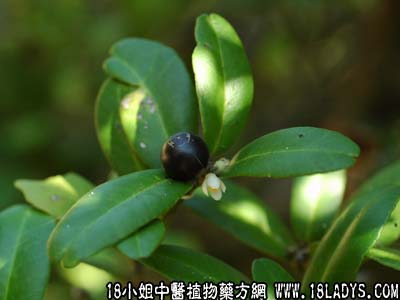

别名：狗骨簕、山桔簕。
植物名：酒饼簕。
生长环境：本品为灌木或小乔木。多生于山地灌木中，或多移植于村庄旁做篱笆用，性耐干旱。
分布：我国南部山地、广州近郊常见。
入药部分：根。
采集根：全年。
自采地点：山岗。
性味：性凉、味微苦。
功能：疏风止咳、化气止痛。
主治、用量和用法：1、外感咳嗽，配伍用；2、骨节疼痛：干用1两至1两半，清水煎服；3、癍痧发热，配伍用。
验方1：（治伤风食滞咳方）东风桔5钱、布渣叶4钱、芒果核2个、木患根5钱、清水三碗，煎成一碗服。
（方解）外感咳嗽，食滞，则因邪不解，治法宜祛风、化气、消滞、去腻。本方以东风桔祛风、化气、止咳；布渣叶消食滞；芒果核、木患根去腻滞。使风从外解，腻在里消，其痛自愈。
（方歌）伤风食滞咳频频，木患根从布渣行，芒果核和东风桔，内消外解此方珍。
验方2：（治骨节疼痛方）东风桔根1两、老桑枝1两、枸杞根1两、丝瓜络5钱、清水五碗，煎成一碗半服。
（方解）老桑枝、枸杞根、丝瓜络能清骨节筋络湿火。若湿火致痛、宜治其本，又治其标，则效果神速，本方以东风桔化气止痛，即治标之理。
（方歌）骨火疼痛不须愁，东风桔与枸杞头，丝瓜络桑枝老，湿火从此去悠悠。
验方3：（治癍痧发热方）东风桔1两、蛇泡簕5钱、路兜簕5钱、海金沙藤5钱、金盏银盘5钱、山芝麻5钱、清水四碗，煎成一碗半服。
（方解）蛇泡簕、路兜簕、山芝麻、金盏银盘、海金沙藤等为癍痧常用药，因其具有解表清里，利尿滑肠之效，本方并用东风桔取其祛风化气止咳，故癍痧发热而咳者，加此药入肺经以为引，效果益佳。
（方歌）癍痧发热兼有咳，金盏银盘东风桔，山芝麻共金沙藤，路兜簕与蛇泡簕。
参考资料：《广州中医验方选集第一集》沥滘医疗站介绍咳痰嗽方：东风桔根3两、普洱茶2两、水煎温服。
《广州常用草药验方集解》治疗风热咳验方：木患根1两、东风桔1两、红丝线5钱、布渣叶3钱、清水四碗，煎成一碗，作一次服。
（方解）风热犯肺、最忌腻滞。本方以东风桔祛风、清热、顺气、止咳，配以木患根、布渣叶防治腻滞，加以红丝线止咳、止血，合为疏风、清热、消滞止咳之剂。
（方歌）除痰顺气东风桔，祛风清热又止咳，渣叶患根防腻滞，红丝咳血用之吉。
本文解释权归中药大全，本文地址：https://www.daquan.com/post/1620.html